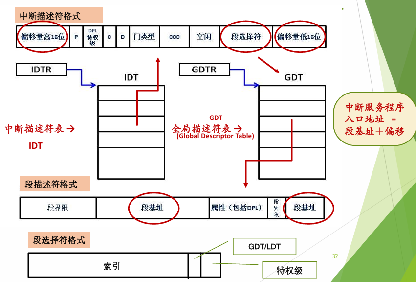

核心速览
这部分的重点在于理解：应用程序到底是如何与操作系统交互的。
整个操作系统的底层逻辑可以被概括为一句话：
操作系统是由中断、异常、事件驱动的。
应用程序不能随心所欲地操作硬件，也不能随便修改内核中的数据结构。它们如果想读文件、写屏幕、创建进程、申请内存，就必须通过 系统调用（System Call） 这扇“唯一合法的大门”进入内核态。
而这扇门之所以能打开，底层依赖的正是硬件提供的 异常控制流（ECF, Exceptional Control Flow）、中断机制 和 特权级切换机制。
操作系统的运行环境（硬件基础）
在正式理解操作系统如何运行之前，我们先要想清楚一个问题：
如果只有一堆 CPU、内存、磁盘、键盘、网卡这些硬件，操作系统凭什么能“管住”所有应用程序？
答案是：硬件必须提供一些基础机制，让操作系统拥有比普通程序更高的权限。
所以操作系统设计者写代码时，首先考虑的不是“我要提供什么高级功能”，而是：
- CPU 有没有特权级？
- 用户程序能不能执行危险指令？
- 发生异常时 CPU 能不能自动跳进内核？
- 能不能在进入内核时保护现场？
- 能不能防止用户程序破坏内核？
这些问题共同构成了操作系统的运行环境。
1. 处理器与寄存器
CPU 不仅仅负责计算，它内部的 寄存器（Registers） 是维持整个系统运行状态的核心。
从程序员的角度看，寄存器可以暂存数据、地址、函数参数和返回值。但从操作系统的角度看，最重要的不是普通数据寄存器，而是那些能够控制 CPU 行为的 控制和状态寄存器。
常见的几类寄存器如下：
PC：程序计数器
PC 是一个通用概念，表示 CPU 接下来要执行的指令地址。不同体系结构会给它不同名字：在 x86 中，16 位叫 IP，32 位叫 EIP，x86-64 中叫 RIP。
你可以把它理解成 CPU 手里的“书签”：CPU 执行程序时，总得知道下一条指令在哪里；发生中断或异常时，系统也必须保存这个位置，之后才能恢复执行。
IR：指令寄存器
它保存当前正在执行的指令。这个寄存器更多是处理器内部流水线和控制逻辑关心，操作系统不会像操作普通通用寄存器那样频繁直接使用它。
PSW：程序状态字
PSW（Program Status Word）不是某一个具体体系结构中一定叫这个名字的寄存器，而是一个比较通用的抽象概念。它表示 CPU 中用于记录当前程序运行状态的一组信息，比如运算结果标志、当前处理器状态、中断控制信息、特权级相关信息等。
不同体系结构会用不同的具体寄存器来承担这个角色。在 x86 架构中，32 位下对应的是 EFLAGS，x86-64 下对应的是 RFLAGS。
EFLAGS / RFLAGS 中包含许多标志位，例如：
- 条件码标志：记录上一次运算结果，比如是否为零、是否进位、是否溢出；
- 控制标志：影响 CPU 的执行行为，比如方向标志；
- 系统标志：与中断、调试、I/O 特权级等机制有关。
直觉解释：PSW 像 CPU 的“状态面板”
你可以把 PSW 理解成 CPU 的状态面板。
有些灯告诉你上一次计算的结果怎么样，比如有没有进位、有没有溢出；有些开关决定 CPU 当前能不能响应中断；还有一些状态位和权限控制有关，影响当前代码能不能执行某些敏感操作。
在 x86 中，这块“状态面板”的具体名字就是
EFLAGS或RFLAGS。普通用户程序不能随便修改其中的关键位，否则它就可能绕过操作系统的保护机制。
控制寄存器：CR0、CR2、CR3、CR4
在 x86 中，控制寄存器负责控制处理器的一些核心机制。
CR0常和保护模式、分页机制是否开启有关。CR2保存导致缺页异常的线性地址。也就是说，一旦发生 page fault，操作系统可以看CR2，知道刚才访问的是哪个地址出问题了。CR3保存页表根地址。进程切换时，经常需要切换CR3，因为不同进程有不同的虚拟地址空间。CR4控制一些扩展机制，比如 PAE、PSE、SMEP 等。
这部分不用一开始死背每一位，但至少要知道：控制寄存器是操作系统控制内存管理、保护模式和异常处理的重要工具。
IDTR、GDTR、LDTR、TR
这些寄存器和 x86 的描述符表机制有关。
IDTR保存 IDT（Interrupt Descriptor Table，中断描述符表） 的位置。GDTR保存 GDT（Global Descriptor Table，全局描述符表） 的位置。LDTR保存 LDT 的相关信息，现代操作系统一般较少直接依赖它。TR是任务寄存器，指向当前任务状态段 TSS。在 x86 中，发生特权级切换时，CPU 可以通过 TSS 找到内核栈指针。
这一组寄存器后面讲中断和系统调用时会反复出现。
2. 特权级别与运行模式
操作系统必须保护自己。
因为如果普通程序可以随便访问任意内存、随便操作磁盘、随便关中断、随便修改页表，那系统就完全失控了。
所以硬件必须提供不同的 运行模式（Mode），也就是我们常说的：
用户态（User Mode）
普通应用程序运行在用户态。用户态权限较低，只能执行非特权指令，不能直接访问关键硬件资源，也不能随意修改内核数据。
内核态（Kernel Mode / Supervisor Mode）
操作系统内核运行在内核态。内核态权限最高，可以执行特权指令，可以访问硬件，可以修改页表，可以管理进程和中断。
在 x86 架构中，有 4 个特权环：
R0 -> R1 -> R2 -> R3权限从 R0 到 R3 逐级降低。
目前主流操作系统通常只使用其中两个：
R0：内核态
R3：用户态RISC-V 的划分方式不太一样，它常见的是：
M 模式：Machine Mode，机器模式，最高权限
S 模式：Supervisor Mode，监管模式，操作系统内核运行在这里
U 模式：User Mode，用户模式，普通应用程序运行在这里直觉解释：为什么要有用户态和内核态？
你可以把计算机系统想象成一个图书馆。
普通读者可以借书、还书、查询目录，但不能随便进库房、改数据库、拆监控、改门禁。
应用程序就是普通读者，操作系统内核就是管理员。用户态和内核态的区分，本质上就是为了防止普通程序直接碰系统核心资源。
3. 状态转换：用户态如何进入内核态？
程序不能在用户态和内核态之间随意横跳。
如果用户程序可以自己执行一条指令说“我要变成内核态”，那特权级就没有意义了。
所以，从用户态进入内核态，必须通过硬件认可的受控入口。
课件里给出的关键结论是：
用户态 → 内核态的唯一正规途径是：中断 / 异常 / 陷入机制。
也就是说，用户程序不能自己直接改 PSW 或 EFLAGS 把自己变成内核态。它必须通过某个事件触发 CPU 的控制流变化，例如：
- 外部设备发来中断；
- 程序执行出错产生异常；
- 程序主动执行陷入指令，请求系统调用。
从内核态返回用户态，则由操作系统设置好返回现场，恢复用户程序的 PC、PSW 等状态，再通过中断返回指令或类似机制返回。
所以这里的流程图是：
flowchart TD A([用户程序在用户态运行]) --> B{{发生中断 / 异常 / 陷入}} B --> C[CPU 通过硬件机制<br/>受控切换到内核态] C --> D[操作系统进入内核<br/>处理相应事件] D --> E[恢复被打断程序的现场] E --> F([返回用户态<br/>继续执行]) classDef startend fill:#eef3ff,stroke:#5b8def,stroke-width:2px,color:#1f2d3d; classDef event fill:#fff7e6,stroke:#f0ad4e,stroke-width:2px,color:#5a4300; classDef process fill:#edf8ed,stroke:#67b567,stroke-width:2px,color:#1f3b1f; class A,F startend; class B event; class C,D,E process;
中断与异常机制（操作系统的引擎）
核心速览
如果把操作系统比作一辆车，那么中断机制就像发动机。
CPU 正常执行程序时，控制流通常是一条平滑向前的线。但系统运行过程中总会出现各种事件：键盘按下、网卡收到数据、磁盘完成读写、程序除零、用户发起系统调用。
一旦这些事件发生，硬件就会改变 CPU 的控制流，把 CPU 带到操作系统预先准备好的处理程序中。
这就是所谓的 异常控制流 ECF。
1. 怎样理解“操作系统是由中断 / 异常 / 事件驱动的”？
这句话一开始听起来有点玄，但其实非常直观。
普通应用程序通常是“主动执行”的。比如你写一个 main()，它从第一行开始，一行一行往下跑。
但操作系统不是这样。
操作系统很多时候并不是自己一直主动运行，而是被各种事件“叫醒”。
比如：
- 用户敲了一下键盘，键盘控制器发出中断，操作系统被叫醒。
- 网卡收到一个数据包，网卡发出中断，操作系统被叫醒。
- 程序访问了一个还没映射的虚拟地址，CPU 产生缺页异常，操作系统被叫醒。
- 程序调用
write()想输出内容，执行系统调用指令，操作系统被叫醒。 - 时钟中断到来，操作系统被叫醒，并可能决定要不要切换进程。
所以，所谓“操作系统是中断 / 异常 / 事件驱动的”，意思是：
操作系统的执行经常不是凭空发生的，而是由硬件事件、程序异常或用户请求触发的。
事件发生后，硬件负责把 CPU 控制权转交给内核；内核处理完事件后，再把控制权交回用户程序，或者调度另一个程序运行。
2. 事件的分类：中断 vs 异常
所有会打破正常执行流的事件，都可以放在“异常控制流”的大框架下理解。
但为了说清楚来源，我们一般把它们分成两大类：
| 类别 | 概念 | 来源 | 同步 / 异步 | 返回行为 |
|---|---|---|---|---|
| 中断 Interrupt | 外中断，由 CPU 外部硬件信号引发 | I/O 设备、时钟、网卡、键盘、磁盘等 | 异步，和当前指令没有直接关系 | 通常返回到下一条指令 |
| 异常 Exception | 内中断，由当前指令执行过程引发 | 除零、非法指令、缺页、保护异常、系统调用等 | 同步，和当前指令直接相关 | 取决于异常类型 |
这里最关键的区别是：
中断是外部来的，异常是当前指令自己引发的。
比如 CPU 正在执行一条普通加法指令，网卡突然收到数据包并发来中断。这和这条加法指令没有关系，所以它是异步中断。
但如果 CPU 正在执行 1 / 0，立刻触发除零异常，这就和当前指令直接相关，所以它是同步异常。
3. ICS 中异常的经典分类
在 ICS 的异常控制流模型中，通常把异常分成四类：
Interrupt：中断
中断来自处理器外部，是异步事件。
例如：
- 时钟中断；
- 键盘中断；
- 磁盘 I/O 完成中断；
- 网卡收到数据包中断。
它和当前正在执行的指令没有直接关系。
处理完成后，通常返回到被打断程序的下一条指令继续执行。
Trap：陷入
陷入是程序有意触发的异常。
最典型的例子就是：
- 系统调用；
- 断点调试。
系统调用不是错误，而是用户程序主动请求操作系统服务。比如用户程序想读文件、写屏幕、创建进程，它就通过系统调用陷入内核。
陷入处理完后，通常返回到下一条指令。
Fault：故障
故障是可能被修复的错误。
最典型的例子是：
- 缺页异常 Page Fault。
比如程序访问某个虚拟地址时，发现对应页面还不在内存里。CPU 触发缺页异常，进入内核。内核把需要的页面从磁盘调入内存，修好页表，然后回到原来的那条指令重新执行。
所以 Fault 的特点是：
处理完后，往往返回到当前出错的指令重新执行。
Abort：终止
终止是不可恢复的严重错误。
比如严重硬件故障、机器检查异常等。
这种情况下，操作系统通常无法修复问题，也就不会返回原程序继续执行。
4. 中断 / 异常的来源不同，处理方式一样吗？
大的机制相似，小的处理逻辑不同。
相似之处在于：
- 中断和异常都会打破当前控制流；
- 都会让 CPU 进入内核；
- 都需要保存现场；
- 都需要根据事件类型查找对应处理程序；
- 都需要在处理后恢复现场或进行调度。
不同之处在于：
-
中断通常来自外部设备，所以它的处理程序常常和设备驱动有关。例如键盘中断要读取键盘输入，网卡中断要处理收到的数据包，磁盘中断要唤醒等待 I/O 的进程。
-
异常来自当前指令执行过程，所以它更关心“这条指令为什么出问题”。比如除零异常可能导致程序收到错误信号，缺页异常可能触发页面调入，系统调用则会进入内核服务例程。
返回行为也不完全相同。
- 中断通常返回到下一条指令。
- 陷入通常返回到下一条指令。
- 故障可能返回到当前指令重新执行。
- 终止一般不返回。
所以你可以这样记：
中断和异常共用一套“进入内核”的底层机制，但具体事件来源、处理目标和返回方式不一样。
软硬协同：中断处理的生命周期
中断机制最精妙的地方在于：它既不是纯硬件完成的，也不是纯软件完成的，而是一次非常典型的 软硬件协同。
硬件负责完成最底层、最可信的控制权转移：发现事件、保存必要现场、切换状态、找到入口，并把 CPU 带进内核。
软件，也就是操作系统，负责真正理解这个事件：它要判断发生了什么、应该调用哪个处理程序、是否需要唤醒进程、是否需要调度，最后再决定返回原程序还是切换到其他进程。
所以可以先用一句话抓住主线：
硬件负责把 CPU 安全地带进内核，操作系统负责在内核里把事情处理完。
课件里的“中断响应流程”图，正是在说明这一点。一次中断从设备发出信号，到 CPU 进入中断处理程序，大致可以分成下面五步：
flowchart TD A["① 设备发出中断信号"] B["② 硬件保存现场<br/>保存 PC / PSW 等基本状态"] C["③ 根据中断码查表<br/>查中断向量表 / IDT"] D["④ 装入中断处理程序入口<br/>更新 PC / PSW 等寄存器"] E["⑤ 执行中断处理程序"] A --> B --> C --> D --> E classDef event fill:#fff7e6,stroke:#f0ad4e,stroke-width:2px,color:#5a4300; classDef hardware fill:#fdf3e7,stroke:#d98c10,stroke-width:2px,color:#5a4300; classDef software fill:#edf8ed,stroke:#67b567,stroke-width:2px,color:#1f3b1f; class A event; class B,C,D hardware; class E software;
这张图的重点不是记住每一个框，而是理解：中断发生后，CPU 的控制流会被硬件强行改道，从原来的程序切到操作系统准备好的中断处理程序。
原来的程序本来正在执行，PC 指向用户程序中的某个位置；中断发生后，硬件保存原来的 PC 和 PSW，再根据中断码查表，把新的入口地址装入 PC。于是下一条被执行的指令就不再是原程序的下一条指令，而是中断处理程序的第一条指令。
这就是所谓的 异常控制流：控制流不再沿着普通程序顺序走，而是因为某个事件被硬件切换到了另一段处理逻辑中。
1. 硬件负责什么？
硬件负责的是 中断响应。
所谓中断响应，就是事件发生以后，CPU 和体系结构要完成一组最低层的动作，把处理器控制权安全地交给特定的处理程序。
课件里的说法可以概括为：
捕获中断源发出的中断 / 异常请求，以一定方式响应，将处理器控制权交给特定的处理程序。
具体来说，硬件通常负责这些事情：
- 检测中断或异常是否发生；
- 确定中断向量号或异常类型；
- 在必要时从用户态切换到内核态；
- 在必要时从用户栈切换到内核栈；
- 保存最基本的现场，比如 PC、PSW 等；
- 在 x86 中，可能保存 EFLAGS、CS、EIP、SS、ESP 等返回所需信息；
- 如果某些异常会产生错误码，硬件还会把错误码压入栈中；
- 根据中断向量号查中断向量表，或者在 x86 保护模式下查 IDT；
- 找到对应的处理程序入口；
- 把 CPU 控制权转交给内核中的处理程序。
这里要注意一个小细节：PC 和 PSW 是通用概念，EIP、RIP、EFLAGS、RFLAGS 是具体架构里的名字。
所以写笔记时可以这样理解：
PC：表示“下一条指令在哪里”的抽象角色
EIP / RIP：x86 中承担 PC 角色的具体寄存器
PSW：表示“程序状态字”的抽象概念
EFLAGS / RFLAGS：x86 中承担类似 PSW 角色的具体寄存器直觉解释
硬件做的事情很像“门禁系统”。
它不负责真正处理业务，但它负责确认事件来了，把 CPU 带到正确的入口，并且保证这个入口不能被普通用户程序随便伪造或绕过。
所以硬件的任务不是“把事情办完”，而是“安全地把控制权交出去”。
2. 软件负责什么？
软件负责的是 中断处理。
硬件把 CPU 带进内核以后，操作系统才真正开始干活。它要识别事件类型，并完成对应处理。
课件里的说法可以概括为：
识别中断 / 异常类型并完成相应的处理。
进入内核后，操作系统通常要做这些事情：
- 继续保存更完整的现场，比如通用寄存器、段寄存器等；
- 分析中断或异常的具体原因；
- 调用对应的中断服务程序、异常处理程序或系统调用处理函数；
- 如果是设备中断，就和设备驱动交互；
- 如果是缺页异常，就处理页表、分配页面或从磁盘调入页面；
- 如果是系统调用，就检查系统调用号、参数和权限，然后执行内核服务；
- 必要时唤醒等待中的进程；
- 必要时进行进程调度；
- 恢复现场；
- 返回原来的用户程序，或者切换到另一个进程运行。
所以硬件和软件的分工可以这样记：
硬件：发现事件，保存基本现场，查表，进入内核入口
软件：保存完整现场，判断原因，执行处理，恢复或调度一句话概括就是：
硬件负责“发现并移交”，软件负责“判断并处理”。
3. 从中断响应到处理结束，完整流程是什么？
我们可以把一次中断 / 异常 / 系统调用的完整生命周期串起来看。
第一步，事件发生。
这个事件可能来自外部设备，比如键盘输入、磁盘 I/O 完成、网卡收到数据包；也可能来自当前指令执行过程，比如除零、缺页、非法指令；还可能来自用户程序主动执行陷入指令，比如系统调用。
第二步，CPU 检测到事件。
对于外部中断，CPU 通常会在当前指令执行完成后检查是否有中断请求。
对于异常，CPU 往往是在执行当前指令时发现问题，比如访问了不存在的页面，或者执行了非法指令。
第三步，硬件保存基本现场。
CPU 不能直接跳去处理中断，否则原来的程序就不知道从哪里继续执行了。所以硬件会保存最关键的状态，例如 PC 和 PSW。在 x86 中，还会保存类似 EIP、CS、EFLAGS 等返回所需信息。
第四步，发生特权级切换。
如果事件发生在用户态，而处理程序位于内核态，那么 CPU 必须从用户态切换到内核态。
在 x86 中，可以理解为从 R3 切换到 R0。
第五步，必要时切换栈。
从用户态进入内核态时，CPU 不能继续使用用户栈，因为用户栈是用户程序自己可以修改的，不可信。于是 CPU 会切换到当前进程对应的内核栈。
第六步，查表找到处理程序入口。
CPU 根据中断向量号去查中断向量表。在 x86 保护模式下，就是查 IDT，也就是中断描述符表。
这个表的作用是告诉 CPU：不同编号的中断或异常，应该跳到哪里去处理。
第七步，跳转到内核入口程序。
查表之后，CPU 获得处理程序入口地址，并把控制流转移过去。
比如系统调用会进入 system_call()，设备中断会进入对应的中断入口，缺页异常会进入缺页异常处理入口。
第八步，操作系统继续保存现场。
硬件只保存了最基本的信息。进入内核后，汇编入口代码还要继续保存完整上下文，比如通用寄存器等。这样内核处理完以后，才能尽量恢复原来程序的执行环境。
第九步，操作系统分析原因并处理事件。
如果是 I/O 中断，就调用设备驱动。
如果是缺页异常，就修复页表或分配页面。
如果是系统调用，就根据系统调用号查系统调用表，再调用对应的内核函数。
第十步，返回前检查调度和信号。
处理完成后，内核不一定立刻返回原程序。它可能还要检查：
当前进程是否需要让出 CPU；
是否有信号等待处理；
是否有更高优先级任务需要运行。
第十一步，恢复现场。
如果决定返回原来的程序，操作系统就恢复之前保存的寄存器和状态。
第十二步，返回用户态或切换进程。
如果继续运行原进程，就通过中断返回指令回到用户态。
如果调度器决定换人，就切换到另一个进程执行。
完整流程可以画成这样：
flowchart TD A["事件发生"] --> B["CPU 检测到中断 / 异常"] subgraph HW["硬件响应阶段"] C["硬件保存基本现场"] D["切换到内核态<br/>必要时切换到内核栈"] E["根据中断向量号查找 IDT"] F["跳转到内核处理入口"] end subgraph SW["操作系统处理阶段"] G["操作系统保存完整现场"] H["分析原因并处理事件"] I["检查调度 / 信号等返回前事务"] J["恢复现场"] end B --> C --> D --> E --> F --> G --> H --> I --> J J --> K["返回用户态<br/>或切换到其他进程"] classDef startend fill:#eef3ff,stroke:#5b8def,stroke-width:2px,color:#1f2d3d; classDef event fill:#fff7e6,stroke:#f0ad4e,stroke-width:2px,color:#5a4300; classDef hardware fill:#fdf3e7,stroke:#d98c10,stroke-width:2px,color:#5a4300; classDef software fill:#edf8ed,stroke:#67b567,stroke-width:2px,color:#1f3b1f; classDef ret fill:#f8f0ff,stroke:#9b6bcb,stroke-width:2px,color:#3d2a54; class A startend; class B event; class C,D,E,F hardware; class G,H,I,J software; class K ret; style HW fill:#fffaf0,stroke:#d98c10,stroke-width:2px,color:#5a4300; style SW fill:#f3fbf3,stroke:#67b567,stroke-width:2px,color:#1f3b1f;
4. 操作系统初始化与中断 / 异常的关系
操作系统不是等中断来了才临时想办法处理。
恰恰相反，操作系统必须在初始化阶段就把中断和异常的入口提前布置好。否则事件真的发生时，CPU 根本不知道该跳到哪里。
这就像一个学校不能等学生突然生病了才临时决定医务室在哪里，而是要提前安排好医务室、值班老师、联系电话和处理流程。
操作系统初始化时通常要做这些事情：
- 建立中断向量表或中断描述符表 IDT；
- 为每一种中断和异常设置对应处理程序；
- 初始化中断控制器，比如 PIC 或 APIC；
- 设置系统调用入口，比如传统 x86 Linux 中的
0x80号门； - 准备 GDT、TSS、内核栈等与特权级切换有关的数据结构；
- 在合适的时机打开中断，让 CPU 开始响应外部事件。
所以，操作系统初始化和中断 / 异常的关系可以这样理解：
初始化阶段负责“布置入口”；运行阶段事件发生时，CPU 才能“按入口进入”。
如果没有初始化 IDT，那么中断或异常发生后，CPU 找不到合法处理入口。轻则当前程序崩溃，重则整个系统无法继续运行。
5. 为什么 Linux 要把中断处理分成上半部和下半部？
这个问题背后其实是一个矛盾：
中断必须及时响应，但中断处理又不能占用 CPU 太久。
外设发来中断以后，操作系统要尽快处理。比如网卡收到数据包，如果迟迟不处理，缓冲区可能溢出；磁盘 I/O 完成后，如果不及时响应，等待 I/O 的进程就不能继续运行。
但是，操作系统又不能在中断处理程序里做太多复杂工作。因为中断处理程序运行时，系统往往处在比较特殊的上下文中。如果它执行太久，就会影响其他中断响应，也会影响整个系统的实时性和并发性。
所以 Linux 把中断处理拆成两部分：
上半部负责立刻做、必须快的事情。
比如：
- 确认中断来源；
- 读取设备状态；
- 清除或应答中断；
- 取走少量关键数据；
- 把后续复杂工作登记下来，交给下半部。
上半部的原则是：越快越好，绝不恋战。
下半部负责稍后做、可以慢一点的事情。
比如：
- 进一步处理数据包；
- 唤醒等待进程；
- 执行协议栈处理；
- 完成较复杂的数据整理；
- 把数据交给更上层的内核模块。
下半部的原则是：把不紧急但必要的工作延后处理。
可以这样画：
flowchart TD A["外设发出中断"] --> B["上半部处理<br/>快速响应中断"] B --> C["确认中断来源<br/>读取设备状态<br/>清除 / 应答中断"] C --> D["登记后续任务<br/>把复杂工作推迟"] D --> E["下半部处理<br/>稍后执行复杂逻辑"] E --> F["处理数据<br/>唤醒进程<br/>调用协议栈或驱动后续逻辑"] classDef event fill:#fff7e6,stroke:#f0ad4e,stroke-width:2px,color:#5a4300; classDef top fill:#fdf3e7,stroke:#d98c10,stroke-width:2px,color:#5a4300; classDef bottom fill:#edf8ed,stroke:#67b567,stroke-width:2px,color:#1f3b1f; class A event; class B,C,D top; class E,F bottom;
直觉解释
上半部像“先把火灭掉”：设备来中断了，先赶紧确认、止损、应答，避免问题扩大。
下半部像“再慢慢收拾现场”：复杂的数据处理、唤醒进程、协议栈逻辑，可以稍后再做。
这样既保证了中断响应速度，也避免中断处理程序长时间占用 CPU。
所以一句话总结：
中断响应流程说明了 CPU 如何从原程序跳到中断处理程序；上半部 / 下半部机制说明了 Linux 如何在“及时响应中断”和“避免中断处理过久”之间取得平衡。
x86 / IA32 体系结构对中断的支持
前面我们已经知道：发生中断或异常后，CPU 会根据某个编号去查表，然后跳转到对应的处理程序。
但这里还要继续追问两个问题：
第一，中断向量号从哪里来？
第二，CPU 根据中断向量号到底查的是哪张表？
在 IA32，也就是 32 位 x86 体系结构中，中断机制大致可以分成两层：
外部设备发出中断信号
↓
中断控制器把它转换成中断向量号
↓
CPU 根据中断向量号查表
↓
找到对应的中断 / 异常处理程序入口所以，这一节真正要理解的是：
中断信号本身不是处理程序地址。中断信号要先变成中断向量号，CPU 再用这个向量号去查表。
1. 中断控制器：PIC 或 APIC
外部设备本身不会直接告诉 CPU：“请跳到某某函数执行。”
它们只是发出一个硬件中断请求。
比如：
- 键盘按下；
- 磁盘 I/O 完成；
- 网卡收到数据包；
- 时钟到达一个周期。
这些设备发出的中断请求，需要先交给 中断控制器 处理。
在 x86 系统中，中断控制器主要有两类：
PIC：Programmable Interrupt Controller，可编程中断控制器
APIC：Advanced Programmable Interrupt Controller，高级可编程中断控制器它们的作用是：
负责将硬件设备发出的中断信号转换成中断向量号，并引发 CPU 中断。
也就是说，外部设备发出的只是“我有事”的信号；PIC / APIC 会把这个信号整理成 CPU 能理解的编号。CPU 拿到这个编号之后，才知道应该去查表找哪个处理入口。
可以先画成这样：
flowchart TD A["外部设备<br/>发出中断请求"] --> B["中断控制器<br/>PIC / APIC"] B --> C["转换成中断向量号"] C --> D["CPU 根据中断向量号查表"] D --> E["进入对应的中断处理程序"] classDef device fill:#fff7e6,stroke:#f0ad4e,stroke-width:2px,color:#5a4300; classDef hardware fill:#fdf3e7,stroke:#d98c10,stroke-width:2px,color:#5a4300; classDef handler fill:#edf8ed,stroke:#67b567,stroke-width:2px,color:#1f3b1f; class A device; class B,C,D hardware; class E handler;
所以，PIC / APIC 解决的是第一个问题：
硬件中断信号如何变成 CPU 可以用来查表的中断向量号。
2. 实模式：中断向量表 IVT
在早期 x86 的 实模式（Real Mode） 下，中断处理机制比较简单。
CPU 使用的是：
中断向量表（Interrupt Vector Table, IVT）
在实模式中，中断向量表里存放的是 中断服务程序的入口地址。
这个入口地址由两部分组成：
段地址 + 偏移地址实模式下的物理地址计算方式是：
入口地址 = 段地址左移 4 位 + 偏移地址也就是：
physical address = segment × 16 + offset所以实模式下的中断寻址逻辑可以理解为：
中断向量号
↓
查中断向量表 IVT
↓
取出段地址和偏移地址
↓
计算中断服务程序入口地址
↓
跳转执行中断服务程序但是，实模式有一个很大的限制：
它不支持现代操作系统需要的 CPU 运行状态切换。
也就是说，实模式下没有我们现在熟悉的用户态 / 内核态保护隔离。中断处理更像是一次由硬件触发的过程调用，只是入口地址由中断向量表决定。
所以课件里说，实模式下：
中断处理与一般的过程调用相似它能找到处理程序，但保护能力很弱。
3. 保护模式：中断描述符表 IDT
到了 保护模式（Protected Mode），事情就复杂了一些。
现代操作系统不能只要求 CPU “跳到某个地址”，还要要求 CPU 做更多检查和保护：
- 当前程序有没有资格使用这个入口？
- 进入处理程序后是不是要切换到内核态？
- 要不要从用户栈切换到内核栈？
- 这个入口是中断门、陷阱门，还是任务门？
- 进入后是否要自动关中断？
所以在保护模式下，CPU 不再使用简单的中断向量表，而是使用：
IDT：Interrupt Descriptor Table，中断描述符表
IDT 里的每一项不是一个简单的函数地址，而是一个：
门描述符（Gate Descriptor）
门描述符里面会保存更多信息，例如：
处理程序所在代码段的段选择符
处理程序的段内偏移量
门的类型
DPL 权限级别
P 位，也就是该描述符是否有效所以，保护模式下的中断处理不只是“找到地址然后跳过去”，而是一次 受保护的控制权转移。

4. 实模式和保护模式的区别
这部分可以用下面这张表记住：
| 对比项 | 实模式 | 保护模式 |
|---|---|---|
| 使用的表 | 中断向量表 IVT | 中断描述符表 IDT |
| 表项内容 | 中断服务程序入口地址 | 门描述符 |
| 地址形成方式 | 段地址左移 4 位 + 偏移地址 | 段选择符 + 偏移量，再结合 GDT / LDT |
| 是否支持特权级切换 | 不支持 | 支持 |
| 是否支持现代 OS 保护机制 | 较弱 | 较强 |
| 中断处理风格 | 类似普通过程调用 | 受保护的控制权转移 |
可以这样理解：
实模式只关心“跳到哪里”；保护模式不仅关心“跳到哪里”，还关心“能不能跳、以什么权限跳、跳过去以后状态如何变化”。
5. 保护模式下的两次查表：IDT 与 GDT
在 x86 保护模式下，CPU 找中断处理程序入口，大致要经历一个“两次查表”的过程。
第一张表是 IDT。
它根据中断向量号，找到对应的门描述符。
第二张表通常是 GDT。
门描述符中包含段选择符，CPU 会根据这个段选择符去 GDT 中找到对应的段描述符，从而得到代码段的基地址。
最后：
处理程序入口地址 = 段基址 + 段内偏移量可以画成这样：
flowchart TD A["产生中断向量号 i"] --> B["通过 IDTR 找到 IDT"] B --> C["查 IDT 第 i 项<br/>得到门描述符"] C --> D["从门描述符中取出<br/>段选择符 + 段内偏移量"] D --> E["通过 GDTR 找到 GDT"] E --> F["根据段选择符<br/>查 GDT 中的段描述符"] F --> G["从段描述符中取出段基址"] G --> H["段基址 + 段内偏移量<br/>得到处理程序入口地址"] H --> I["进行权限检查<br/>必要时切换特权级和栈"] I --> J["进入中断 / 异常处理程序"] classDef vector fill:#fff7e6,stroke:#f0ad4e,stroke-width:2px,color:#5a4300; classDef table fill:#eef3ff,stroke:#5b8def,stroke-width:2px,color:#1f2d3d; classDef hardware fill:#fdf3e7,stroke:#d98c10,stroke-width:2px,color:#5a4300; classDef handler fill:#edf8ed,stroke:#67b567,stroke-width:2px,color:#1f3b1f; class A vector; class B,C,D,E,F,G,H table; class I hardware; class J handler;
这个过程看起来比实模式麻烦得多，但它的目的非常明确：
CPU 不仅要找到处理程序在哪里，还要借助描述符表完成权限检查、特权级切换和保护控制。
这正是现代操作系统能够把用户程序和内核隔离开的基础之一。
6. IDTR、GDTR、IDT、GDT 分别是什么？
这里有几个名字很容易混，我们分开看。
IDTR
IDTR 是 中断描述符表寄存器。
它保存 IDT 的基地址和界限。CPU 要查 IDT，首先要通过 IDTR 知道 IDT 放在内存哪里。
可以理解为：
IDTR：告诉 CPU，IDT 在哪里IDT
IDT 是 中断描述符表。
每个中断向量号对应 IDT 中的一项。比如传统 x86 Linux 中：
int $0x80 → 查 IDT[0x80]IDT 第 128 项对应系统调用入口。
可以理解为：
IDT：根据中断向量号，找到对应的门描述符GDTR
GDTR 是 全局描述符表寄存器。
它保存 GDT 的基地址和界限。CPU 要查 GDT，首先要通过 GDTR 知道 GDT 在哪里。
可以理解为：
GDTR：告诉 CPU，GDT 在哪里GDT
GDT 是 全局描述符表。
它保存代码段、数据段等段描述符信息。门描述符里的段选择符会指向 GDT 中的某一项，CPU 通过这一项获得代码段的基地址、界限、权限等信息。
可以理解为：
GDT：根据段选择符，找到代码段或数据段的描述信息门描述符
门描述符是 IDT 中的表项。
它告诉 CPU：发生某个中断或异常时，应该通过哪个代码段、哪个偏移量进入处理程序，并且这个入口具有什么权限和门类型。
可以理解为：
门描述符：受保护的处理程序入口说明书7. 门描述符的种类
x86 保护模式下，IDT 表项可以使用不同类型的门描述符。不同的门对应不同的控制转移方式。
常见的门有四种。
中断门（Interrupt Gate）
中断门常用于硬件中断。
它的一个重要特点是：
通过中断门进入处理程序时，硬件会自动清除 IF 位，也就是自动关中断。
IF 位是 EFLAGS 中控制是否响应可屏蔽中断的标志位。
为什么硬件中断常用中断门？
因为当 CPU 正在处理一个硬件中断时，通常不希望立刻又被新的可屏蔽中断打断，否则中断嵌套可能变得很复杂，甚至影响系统稳定性。
所以，中断门的直觉是：
先专心处理当前中断，暂时别让新的可屏蔽中断插进来陷阱门（Trap Gate）
陷阱门和中断门很像，也会让 CPU 跳到指定处理程序。
但它和中断门的关键区别是：
通过陷阱门进入处理程序时，不会自动清除 IF 位。
也就是说，进入陷阱门后，CPU 不会自动关中断。
系统调用和一些异常常用陷阱门。
在早期 x86 Linux 中，int $0x80 对应的第 128 号门就是陷阱门。Linux 会把这个门的 DPL 设置为 3，使用户态程序可以通过它进入内核的系统调用总入口 system_call()。
这里要注意：
DPL = 3 不是说 system_call() 运行在用户态，而是说用户态程序有资格使用这个门。
真正进入门以后，CPU 仍然会切换到内核态执行 system_call()。
任务门（Task Gate）
任务门和 x86 的硬件任务切换机制有关。
它可以让中断发生时切换到另一个任务的 TSS。但 Linux 通常不使用任务门来完成普通中断处理，因为 Linux 更倾向于用自己的软件方式管理进程切换和上下文切换。
所以任务门在这部分了解即可。
调用门（Call Gate）
调用门用于跨特权级过程调用。
它也可以实现从低特权级到高特权级的受控调用。但现代主流操作系统很少把它作为主要系统调用机制。Linux 早期使用 int $0x80，后来使用 sysenter / sysexit，x86-64 主要使用 syscall / sysret。
所以调用门也属于了解即可。
8. 中断门和陷阱门的核心区别
这两个最容易考，也最容易混。
可以用一张表记：
| 对比项 | 中断门 Interrupt Gate | 陷阱门 Trap Gate |
|---|---|---|
| 是否自动清 IF 位 | 会自动清 IF，进入后关中断 | 不会自动清 IF |
| 常见用途 | 硬件中断 | 系统调用、调试陷阱、部分异常 |
| 直觉理解 | 先屏蔽新的可屏蔽中断，专心处理当前中断 | 不自动屏蔽中断，适合有意触发的陷入 |
一句话记忆：
中断门会自动关中断，陷阱门不会自动关中断。
9. 把整个 IA32 中断支持流程串起来
最后我们把这一节串成一张图：
flowchart TD A["外部设备发出中断请求"] --> B["PIC / APIC<br/>转换成中断向量号"] B --> C{"CPU 当前模式"} C --> D["实模式"] D --> E["查中断向量表 IVT"] E --> F["取出段地址和偏移地址"] F --> G["段地址左移 4 位 + 偏移地址"] G --> H["进入中断服务程序<br/>类似普通过程调用"] C --> I["保护模式"] I --> J["查中断描述符表 IDT"] J --> K["取得门描述符"] K --> L["取出段选择符和段内偏移量"] L --> M["查 GDT 中的段描述符"] M --> N["段基址 + 段内偏移量"] N --> O["权限检查 / 特权级切换 / 栈切换"] O --> P["进入内核处理程序"] classDef event fill:#fff7e6,stroke:#f0ad4e,stroke-width:2px,color:#5a4300; classDef hardware fill:#fdf3e7,stroke:#d98c10,stroke-width:2px,color:#5a4300; classDef real fill:#eef3ff,stroke:#5b8def,stroke-width:2px,color:#1f2d3d; classDef protected fill:#edf8ed,stroke:#67b567,stroke-width:2px,color:#1f3b1f; classDef decision fill:#f8f0ff,stroke:#9b6bcb,stroke-width:2px,color:#3d2a54; class A,B hardware; class C decision; class D,E,F,G,H real; class I,J,K,L,M,N,O,P protected;
这一节最后可以这样收束：
PIC / APIC 负责把外部硬件中断转换成中断向量号；实模式下，CPU 用中断向量号查 IVT，直接获得处理程序入口；保护模式下，CPU 用中断向量号查 IDT，通过门描述符、GDT 和权限检查，受控地进入内核处理程序。
所以，x86 保护模式下的中断机制并不是单纯为了“跳转”，而是为了在跳转的同时完成保护和隔离。
系统调用（System Call）的底层运行机制
核心速览
用户程序打印一句
"Hello World"，并不是直接把字符写到屏幕硬件上。它调用了 C 标准库的
printf()，printf()可能先在用户态做格式化和缓冲，最终需要真正输出时，会触发write()系统调用。所以系统调用是应用程序请求操作系统服务的合法入口。
1. 应用程序是如何与操作系统交互的？
应用程序与操作系统交互，最主要的方式就是：
系统调用。
应用程序运行在用户态，不能直接访问硬件，也不能直接操作内核数据结构。
但它总会需要操作系统帮忙，比如：
- 读文件；
- 写文件；
- 创建进程；
- 结束进程；
- 申请内存；
- 等待 I/O；
- 访问设备；
- 获取时间；
- 发送网络数据。
这些事情都需要操作系统参与。
于是应用程序会调用 C 库或 API，例如：
write(1, "Hello\n", 6);表面上看，这是一个 C 函数调用。
但它内部会把系统调用号和参数准备好，然后执行特殊指令进入内核。
进入内核后，操作系统完成真正的写操作，再把返回值交还给应用程序。
所以应用程序和操作系统之间的关系可以画成：
flowchart TD A[应用程序] B[C 标准库或系统库] C[系统调用入口] D[操作系统内核] E[硬件 / 文件系统 / 设备驱动] A -->|调用 C 库 / API| B B -->|封装系统调用号和参数| C C --> D D --> E classDef app fill:#eef3ff,stroke:#5b8def,stroke-width:2px,color:#1f2d3d; classDef lib fill:#fff7e6,stroke:#f0ad4e,stroke-width:2px,color:#5a4300; classDef kernel fill:#edf8ed,stroke:#67b567,stroke-width:2px,color:#1f3b1f; classDef hw fill:#f8f0ff,stroke:#9b6bcb,stroke-width:2px,color:#3d2a54; class A app; class B,C lib; class D kernel; class E hw;
一句话总结：
应用程序通过系统调用请求操作系统服务，系统调用通过异常 / 陷入机制实现用户态到内核态的受控切换。
2. 系统调用 vs C 函数调用
这是一个非常经典的易混点。
普通 C 函数调用，比如：
int y = add(1, 2);它只是用户态内部的一次跳转。
它不会进入内核，不会切换特权级，不会查 IDT，也不会触发硬件异常机制。
系统调用就不一样了。
系统调用虽然在 C 代码里也常常表现得像一个函数，比如：
write(1, buf, len);但它底层会触发一次从用户态到内核态的切换。
可以这样对比：
| 对比项 | C 函数调用 | 系统调用 |
|---|---|---|
| 是否切换特权级 | 不切换 | 从用户态进入内核态 |
| 是否进入内核 | 不一定，通常不进入 | 一定进入内核 |
| 是否触发异常 / 陷入机制 | 不触发 | 触发 |
| 调用方式 | 普通 call 指令 | int 0x80、sysenter、syscall 等 |
| 开销 | 较小 | 较大 |
| 能否访问内核资源 | 不能 | 可以请求内核代为访问 |
直觉解释
C 函数调用像你在自己房间里找东西。
系统调用像你要进入学校档案室。你不能自己推门进去，必须走登记、验证、交申请单这一整套流程。
这个流程更慢，但它保证了安全。
3. 系统调用、库函数、API、内核函数的关系
这几个词很容易混在一起，我们拆开看。
API
API 是程序员看到的接口规范。
例如 POSIX 规定了 read()、write()、open() 这些接口应该怎么用。
库函数
库函数是 API 的具体封装实现。
比如 C 标准库或 glibc 提供 printf()、write() 等函数。它们运行在用户态。
Note
API 是逻辑层面的接口描述，库函数是代码层面的接口实现或封装。
更进一步说：
- API：规定“有什么功能、怎么调用、输入输出是什么、行为语义是什么”
- 库函数：用具体代码把这个接口做出来，或者把这个接口转接到更底层机制
系统调用
系统调用是内核提供的服务入口。
它不是普通函数调用，而是通过特殊指令触发陷入，进入内核。
内核函数
内核函数是真正在内核态执行的函数。
比如早期 Linux 中，write 系统调用最后可能会分派到 sys_write()。
它们的关系可以这样画：
flowchart TD subgraph U[用户态] A[应用程序] B[API / C 库函数] C[系统调用封装] D[陷入指令进入内核] end subgraph K[内核态] E["系统调用总入口<br/>system_call()"] F[系统调用表<br/>sys_call_table] G[具体内核函数<br/>sys_read / sys_write / sys_fork ...] end A --> B --> C --> D --> E --> F --> G classDef user fill:#eef3ff,stroke:#5b8def,stroke-width:2px,color:#1f2d3d; classDef kernel fill:#edf8ed,stroke:#67b567,stroke-width:2px,color:#1f3b1f; class A,B,C,D user; class E,F,G kernel;
所以不能简单说 API 就是系统调用。
更准确的说法是：
API 是给程序员看的接口，系统调用是内核真正提供服务的入口，库函数负责把两者连接起来。
4. 什么是软件异常？它是如何工作的？
软件异常就是：
由程序主动执行某条特殊指令触发的异常。
最典型的软件异常就是系统调用。
比如在 x86 早期 Linux 中，用户程序会执行：
int $0x80这条指令的意思不是普通跳转，而是主动触发 0x80 号陷入。
CPU 看到这条指令后，会去 IDT 中查第 128 项，找到系统调用入口 system_call()，然后切换到内核态执行。
软件异常的基本流程是：
- 用户程序把系统调用号放入指定寄存器；
- 用户程序把参数放入指定寄存器；
- 执行陷入指令；
- 硬件切换到内核态；
- 硬件根据向量号进入系统调用总入口；
- 内核保存现场；
- 内核查系统调用表；
- 执行具体系统调用；
- 返回用户态。
所以软件异常和硬件中断最大的区别在于：
软件异常是程序主动触发的，硬件中断是外部设备触发的。
Linux x86 系统调用的具体执行过程
下面以传统 x86 Linux 的 int $0x80 为例，把系统调用完整拆开。
1. 为什么选择 int $0x80？
在早期 x86 Linux 中，系统调用通过：
int $0x80触发。
0x80 十进制是 128。
操作系统初始化时，会在 IDT 的第 128 项设置一个门描述符。这个门描述符指向系统调用总入口：
system_call()也就是说：
int $0x80
↓
查 IDT[128]
↓
进入 system_call()这里要特别注意：
system_call() 不是某个具体系统调用，比如不是 read()，也不是 write()。
它是所有系统调用共同的总入口。
真正要执行哪个系统调用，要进入 system_call() 后再看系统调用号。
2. system_call() 与 IDT 和系统调用表的关系
这里是系统调用机制里最容易混的地方，因为它涉及两张不同的表：
一张是 IDT，中断描述符表；
另一张是 系统调用表 sys_call_table。
这两张表都和系统调用有关，但它们解决的问题完全不同。
简单说：
IDT 负责“怎么进入内核”；系统调用表负责“进入内核后具体执行哪个系统调用”。
先看 system_call() 和 IDT 的关系。
在传统 x86 Linux 中，用户程序如果想发起系统调用，会执行一条特殊指令：
int $0x80这里的 0x80 是一个 中断向量号，十进制就是 128。
CPU 执行到 int $0x80 后，会认为当前发生了一次编号为 0x80 的软件异常 / 陷入。于是 CPU 会根据这个编号去查 IDT 的第 128 项。
也就是说：
int $0x80
↓
CPU 查 IDT[0x80]Note
IDT 存放的是不同中断 / 异常 / 陷入处理入口的信息；系统调用是一种特殊的陷入，也就是软件异常，所以它在 IDT 里也有一个对应入口。
IDT 第 128 项中保存的并不是某个具体系统调用函数，比如 sys_read() 或 sys_write()，而是系统调用的统一入口地址：
system_call()所以第一层关系是：
IDT[0x80] → system_call()这一步的意义是：
CPU 通过 IDT 找到系统调用总入口，并完成从用户态到内核态的受控切换。
也就是说，IDT 关心的不是“你要 read 还是 write”，而是“你要通过 0x80 这个入口进入内核”。
再看 system_call() 和系统调用表的关系。
CPU 进入 system_call() 之后，只是到了一个统一入口。这个时候内核还不知道用户程序具体想干什么。
用户程序到底想执行 read()、write()、fork() 还是 exit()，需要靠 系统调用号 来说明。
在传统 x86 Linux 中，系统调用号通常放在 eax 寄存器中。
例如：
eax = 1 表示 exit
eax = 3 表示 read
eax = 4 表示 write所以，进入 system_call() 后，内核会先查看 eax 中的系统调用号。
如果这个系统调用号合法，system_call() 就会用它作为索引，去查系统调用表：
sys_call_table比如，如果此时：
eax = 4那么内核就会查：
sys_call_table[4]而这个表项中保存的就是 write 系统调用对应的内核函数入口：
sys_call_table[4] → sys_write()所以第二层关系是：
system_call()
↓ 根据 eax 查 sys_call_table
sys_call_table[eax]
↓
具体内核函数把整个过程串起来，就是：
用户程序
↓ 执行 int $0x80
CPU 根据 0x80 查 IDT
↓
IDT[0x80] 指向 system_call()
↓
CPU 进入内核态，执行 system_call()
↓
system_call() 读取 eax 中的系统调用号
↓
根据 eax 查 sys_call_table
↓
找到具体内核函数
↓
执行 sys_read / sys_write / sys_fork / ...如果用 write() 举例，大致就是：
用户程序调用 write()
↓
库函数把 write 的系统调用号 4 放入 eax
↓
执行 int $0x80
↓
CPU 查 IDT[0x80]
↓
进入 system_call()
↓
system_call() 发现 eax = 4
↓
查 sys_call_table[4]
↓
进入 sys_write()这里一定要注意两个编号不要混：
0x80：中断向量号，用来查 IDT，作用是进入系统调用总入口 system_call()
4：系统调用号，用来查 sys_call_table，作用是选择具体的 write 系统调用所以，int $0x80 并不是直接进入 sys_write()。
它只是把 CPU 带到系统调用总入口 system_call()。
真正决定执行 sys_read()、sys_write() 还是 sys_fork() 的，是 eax 中保存的系统调用号，以及 system_call() 对 sys_call_table 的查询结果。
一句话总结：
IDT 把 CPU 带到 system_call()；system_call() 再根据系统调用号查 sys_call_table，找到真正要执行的内核函数。
3. 系统调用号和参数如何传递？
用户态和内核态之间不能随便共享控制权，所以必须有一套约定：
- 系统调用号放在哪里？
- 参数放在哪里？
- 返回值放在哪里？
在传统 x86 Linux 中，常见约定是：
eax：保存系统调用号，返回时也保存返回值；ebx：第一个参数；ecx：第二个参数；edx：第三个参数；esi：第四个参数；edi：第五个参数；ebp：有时可用于更多参数，具体实现和版本有关。
课件里重点强调的是：
eax：系统调用号 / 返回值
ebx、ecx、edx、esi、edi：系统调用参数比如执行：
write(1, string, 7);它大致会被转换成类似这样的寄存器准备过程：
movl $4, %eax # 4 是 write 的系统调用号
movl $1, %ebx # 第一个参数：文件描述符 1，表示标准输出
movl $string, %ecx # 第二个参数：字符串地址
movl $7, %edx # 第三个参数：写入长度
int $0x80 # 进入内核4. 执行 int $0x80 后，硬件做了什么？
当 CPU 执行 int $0x80 时，它不是简单跳转。
因为此时发生了特权级变化：从用户态 R3 进入内核态 R0。
硬件需要完成一系列关键动作。
第一，检查权限。
IDT 第 128 项的门描述符必须允许用户态程序调用。Linux 会把这个门的 DPL 设置为 3，使用户态程序可以通过它进入内核。
Note
DPL 是 Descriptor Privilege Level，中文一般叫 描述符特权级，是写在“门描述符 / 段描述符”里的权限门槛，用来规定“什么特权级的代码可以访问这个入口”。
第二，切换栈。
用户态使用用户栈，内核态使用内核栈。
从用户态进入内核态时，CPU 会通过 TSS 找到当前进程的内核栈指针，然后切换到内核栈。
第三，保存返回所需的信息。
硬件会把用户态的一些关键信息压入内核栈，比如：
- 用户态
SS:ESP； EFLAGS；- 用户态
CS； - 用户态
EIP。
这些信息非常重要，因为内核处理完后，需要靠它们返回用户程序。
第四，查 IDT。
CPU 用 0x80 查 IDT，找到第 128 项门描述符。
第五，定位 system_call()。
根据门描述符里的段选择符和偏移量，再结合 GDT 中的段描述符，找到系统调用总入口 system_call()。
于是控制流进入内核。
5. 进入 system_call() 后，软件做了什么？
硬件已经把 CPU 安全带进内核了，但它只保存了最基本的现场。接下来，内核入口代码要继续保存完整上下文。这就是课件里的 SAVE_ALL。
SAVE_ALL 会把一批寄存器压入内核栈，比如：
es、ds；eax；ebp；edi；esi；edx；ecx；ebx
为什么要保存这些？
因为系统调用处理过程中会使用这些寄存器。如果不保存，返回用户态后，用户程序原来的寄存器状态就被破坏了。
保存现场后，system_call() 会检查 eax 中的系统调用号。
如果系统调用号非法，就返回错误，例如 -ENOSYS。
如果合法，就执行类似这样的逻辑：
call *sys_call_table(, %eax, 4)
# 偏移量(基址寄存器, 索引寄存器, 比例因子)意思是：
用 eax 作为索引，到系统调用表里找对应函数地址，然后调用它。
6. 系统调用处理结束后，处理器转去哪里？
具体内核函数，比如 sys_write()，执行完之后，不是直接回到用户程序。
它会进入统一的返回路径：
ret_from_sys_call这个模块会做返回前检查。
例如：
- 是否需要重新调度进程；
- 是否有未处理信号；
- 是否要进入信号处理流程。
如果发现 need_resched 不为 0，说明当前进程可能需要让出 CPU，内核就会进入调度相关流程。
如果发现 sigpending 不为 0，说明有信号等待处理，内核就会处理信号。
如果都没有问题，就执行恢复现场的逻辑。
最后通过类似 iret 的返回机制，恢复用户态的 EIP、CS、EFLAGS、SS:ESP，回到用户程序继续运行。
所以完整路径是：
flowchart TD subgraph K[内核态：系统调用执行阶段] A["system_call()"] B["sys_write() / sys_read() / ..."] end subgraph R[内核态：返回前处理阶段] C[ret_from_sys_call] D[检查调度与信号] E[restore_all] end F([iret 返回用户态]) A --> B --> C --> D --> E --> F classDef entry fill:#eef3ff,stroke:#5b8def,stroke-width:2px,color:#1f2d3d; classDef kernel fill:#edf8ed,stroke:#67b567,stroke-width:2px,color:#1f3b1f; classDef return fill:#fff7e6,stroke:#f0ad4e,stroke-width:2px,color:#5a4300; class A entry; class B,C,D,E kernel; class F return;
7. Linux 响应 int $0x80 的完整流程图
flowchart TD UserApp["① 应用程序调用 API / C 库函数"] --> Lib["② C 库准备系统调用号和参数"] Lib --> Reg["③ eax 放系统调用号<br/>ebx / ecx / edx 等放参数"] Reg --> Trap["④ 执行 int 0x80"] subgraph HW["硬件响应阶段"] Trap --> StackSwitch["⑤ 特权级从 R3 切到 R0<br/>用户栈切到内核栈"] StackSwitch --> PushBasic["⑥ 硬件压入 SS:ESP、EFLAGS、CS、EIP"] PushBasic --> IDT["⑦ 查 IDT 第 128 项"] IDT --> Entry["⑧ 定位 system_call 入口"] end subgraph SW["软件处理阶段"] Entry --> Save["⑨ SAVE_ALL 保存通用寄存器"] Save --> Check["⑩ 检查 eax 中的系统调用号"] Check --> Table["⑪ 根据 eax 查 sys_call_table"] Table --> Exec["⑫ 执行 sys_write / sys_read 等内核函数"] Exec --> Ret["⑬ ret_from_sys_call"] Ret --> Signal["⑭ 检查调度 need_resched<br/>和信号 sigpending"] Signal --> Restore["⑮ RESTORE_ALL 恢复寄存器"] end Restore --> Iret["⑯ iret 返回用户态"] Iret --> UserReturn["⑰ 用户程序继续执行"] classDef user fill:#eef3ff,stroke:#5b8def,stroke-width:2px,color:#1f2d3d; classDef hardware fill:#fff7e6,stroke:#f0ad4e,stroke-width:2px,color:#5a4300; classDef software fill:#edf8ed,stroke:#67b567,stroke-width:2px,color:#1f3b1f; classDef ret fill:#f8f0ff,stroke:#9b6bcb,stroke-width:2px,color:#3d2a54; class UserApp,Lib,Reg,Trap user; class StackSwitch,PushBasic,IDT,Entry hardware; class Save,Check,Table,Exec,Ret,Signal,Restore software; class Iret,UserReturn ret;
更快的系统调用：sysenter / sysexit 与 syscall / sysret
早期 x86 Linux 使用 int $0x80 进行系统调用。
但这个机制有一个问题：
它太通用了，所以不够快。
int $0x80 走的是通用中断 / 异常机制，需要查 IDT，完成较复杂的门描述符处理和返回现场恢复。
系统调用是非常频繁的操作。如果每次读写文件、获取时间、网络通信都走这么重的流程，开销就会很明显。
所以 Intel 在后来的处理器中提供了更快的系统调用指令：
sysenter / sysexit它们的作用是：
快速从用户态进入内核态；
快速从内核态返回用户态。
它和 int 0x80 / iret 的区别可以这样理解：
| 对比项 | int 0x80 / iret | sysenter / sysexit |
|---|---|---|
| 定位入口方式 | 通过 IDT 查门描述符 | 通过专门 MSR 寄存器保存入口 |
| 机制性质 | 通用中断 / 异常机制 | 专门为系统调用优化 |
| 灵活性 | 更通用 | 更专门 |
| 性能 | 较慢 | 更快 |
| 返回方式 | iret | sysexit |
到了 x86-64，主流系统调用机制变成：
syscall / sysret所以可以这样记：
flowchart LR A["早期 x86<br/>int 0x80 / iret"] B["32 位快速系统调用<br/>sysenter / sysexit"] C["x86-64<br/>syscall / sysret"] A --> B --> C classDef old fill:#eef3ff,stroke:#5b8def,stroke-width:2px,color:#1f2d3d; classDef fast fill:#fff7e6,stroke:#f0ad4e,stroke-width:2px,color:#5a4300; classDef modern fill:#edf8ed,stroke:#67b567,stroke-width:2px,color:#1f3b1f; class A old; class B fast; class C modern;
直觉解释
int 0x80像走普通安检通道，流程完整但慢。
sysenter/syscall像专门为高频通行设计的快速通道，规则更固定，但速度更快。
机制与策略的分离
操作系统设计中有一个非常重要的思想：机制与策略分离。
这句话听起来抽象，但放在系统调用和中断里非常好理解。
机制回答的是：
“我怎么做到这件事？”
比如：
- 怎么从用户态切换到内核态；
- 怎么保存现场；
- 怎么查 IDT；
- 怎么进入
system_call()； - 怎么从内核返回用户态。
这些属于机制，通常由硬件和操作系统底层共同完成。
策略回答的是：
“进入之后具体怎么处理？”
比如：
- 这个系统调用是否合法；
- 这个文件能不能写；
- 这个进程要不要被调度走；
- 这个缺页异常应该分配新页，还是直接杀掉进程；
- 这个设备中断应该唤醒哪个等待队列。
这些属于策略，通常由操作系统内核根据具体情况决定。
放到系统调用中，就是：
机制：int 0x80 / syscall 让程序进入内核
策略：内核根据系统调用号和参数决定具体执行什么放到中断中，就是：
机制：硬件发现中断并跳转到中断处理入口
策略：操作系统决定如何处理这个设备事件这个思想后面学调度、内存管理、文件系统时还会反复出现。
把所有问题串起来
最后，我们回到课件开头那两页问题，把它们统一串成一条主线。
应用程序如何与操作系统交互？
答案是：
通过系统调用，也可能通过异常、信号等机制间接与操作系统发生交互。系统调用是最核心、最正式的接口。
为什么说操作系统是中断 / 异常 / 事件驱动的？
答案是：
因为操作系统很多时候是被事件唤醒的。外设中断、程序异常、系统调用、时钟中断都会改变 CPU 控制流，让 CPU 进入内核。
中断和异常来源有什么不同？
答案是：
中断来自 CPU 外部，通常异步；异常来自当前指令执行过程，通常同步。
处理方式一样吗？
答案是：
底层进入内核的机制类似，都要保存现场、查表、进入处理程序；但具体处理逻辑、返回位置和恢复方式不同。
中断 / 异常处理中，硬件负责什么？
答案是：
硬件负责检测事件、保存基本现场、切换特权级和栈、查 IDT、跳转到处理程序入口。
软件负责什么？
答案是：
操作系统负责保存完整上下文、分析原因、执行具体处理、调度、处理信号、恢复现场和返回。
操作系统初始化与中断 / 异常有什么关系？
答案是：
OS 启动时必须先设置 IDT、GDT、TSS、中断控制器、系统调用入口等结构，否则事件发生时 CPU 不知道该进入哪里。
什么是软件异常？
答案是：
程序主动执行特殊指令触发的异常，比如系统调用。它通过陷入机制进入内核。
x86 有哪些关键控制和状态寄存器？
答案是：
EIP/RIP、EFLAGS/RFLAGS、CR0/CR2/CR3/CR4、IDTR、GDTR、TR 等。它们分别负责执行位置、状态控制、分页和保护、中断描述符表定位、全局描述符表定位和内核栈切换支持。
==system_call() 和 IDT 是什么关系？==
答案是：
IDT 第 128 项门描述符指向 system_call()，所以 int $0x80 通过 IDT 进入系统调用总入口。
==system_call() 和系统调用表是什么关系？==
答案是：
system_call() 根据 eax 中的系统调用号索引 sys_call_table，找到真正的内核函数。
系统调用结束后处理器去哪里？
答案是：
具体系统调用函数执行完后，会进入 ret_from_sys_call，检查调度和信号，然后恢复现场返回用户态。
系统调用与函数调用有什么区别？
答案是：
函数调用通常不切换特权级，只是在用户态内部跳转；系统调用会通过陷入机制进入内核态，开销更大，但能请求内核服务。
系统调用与 API 是什么关系？
答案是：
API 是程序员看到的接口，系统调用是内核真正提供服务的入口，C 库负责把 API 调用封装成系统调用。
总结：这一讲真正要掌握的主线
这一讲最重要的不是背一堆寄存器名字，而是理解这条控制流：
flowchart TD A["应用程序在用户态运行"] B["需要操作系统服务<br/>或发生异常 / 外部事件到来"] C["系统调用 / 异常 / 中断"] subgraph HW["硬件响应阶段"] D["硬件保存基本现场"] E["切换特权级、查 IDT"] F["进入内核入口程序"] end subgraph SW["操作系统处理阶段"] G["操作系统保存完整现场<br/>分析原因、查表分派"] H["执行系统调用 / 异常处理 / 中断处理"] I["检查调度和信号"] J["恢复现场"] end K["返回用户态<br/>或切换到另一个进程"] A --> B --> C --> D --> E --> F --> G --> H --> I --> J --> K
如果用一句话概括：
用户程序本来只能在用户态老老实实运行；一旦发生中断、异常或系统调用，硬件就会受控地把 CPU 带进内核；内核保存现场、判断原因、执行处理、再恢复现场或调度其他进程。这就是操作系统真正“运行起来”的底层机制。